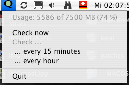

Yet a lot of beautiful tools exist to measure/monitor your private mac's local disk usage. As I was unable to google up anything that does the same thing (at least somehow) but for remote servers, ... Voila: rpcquota.app. It is intended to report the disk quota usage, as reported by remote NFS servers, that are running the RPC service rquotad.
This tool is useless for the home user but interesting only for people having their home directory sit e.g. on a Solaris NFS Server. Mac OSX currently (10.5 / Leopard) provides no mechanisms to make users aware of quotas configured on such rquotad enabled NFS servers. In Finder, users will get the partition's free space reported when looking in their homedirectory -- which will ever likely be much more than their active quotas. This might work better with BSD-Style quotas (i.e. mounting clientside e.g. from OSXServer), but simply is inexistant when rquotad is required. This tool tries to fill this gap. In three amazing colors.
I have the hope to keep it autoconfigureable -- as long as nobody complains, rpcquota.app will:
Not too beautiful, to be honest...
... but still more mac-like than doing it in a shell :-).
Besides the colors named above, gray background on the menu icon
implies no (or bad) quota results. The Tooltip as well as the menu's
first item will display user messages / quota immediately after launch,
then re-scan every 60 minutes (which can be turned off).
Download and open the rpcquota.dmg (99kB) from here, and drag-drop the app icon to a destination folder of your choice (e.g. /Applications). rpcquota.app comes as a universal binary, running on Mac OS X Tiger and greater. Add to your login items in User Preferences if desired. If you still think you might want to use this tool, but it does not work for you, please provide feedback/translations/flames by mail. Sources available sooner or later after cleanup or on request. Use rpcquota.app at your own risk!
Q: How much does it cost?
A: The time to download and unpack. It's free. Simply not OSS (yet).
Q: What about ..... quota system support?
A: rpcquota.app supports exclusively RPC rquotad requests and
is only tested against solaris servers. it does not care at all
about any local disk, or even
os x native BSD quotas to display space usage. No changes planned.
Q: Which dependencies does rpcquota.app have?
A: It only relies on common system libs, no external things.
Q: How do I tell which version I have installed?
A: This thing works ok for me, so I didn't release something "better" yet.
Any future release will have a version info. Or a changelog. And stuff.
Q: Bugs?
A: Oh yes, it currently leaks at least 30 bytes a hour. Fix by buying memory, log out at least once a year or bug me to improve. Err, well, yes -- and it does not bother the number of files limits reported by rquotad (yet).